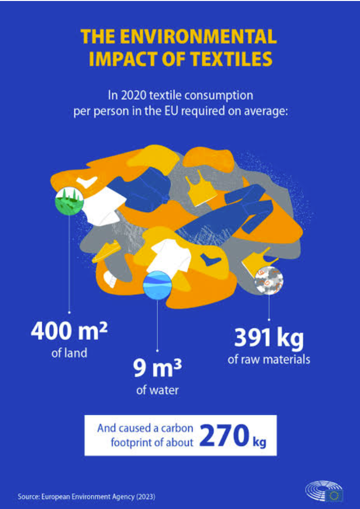

THE EVIDENCE
How big is the textile
industry's environmental footprint?
The numbers reveal the scale of water use, chemical inputs and environmental pressure.
💧 215 trillion litres of water
The global textile industry uses around 215 trillion litres of water every year — equivalent to about 86 million Olympic-sized swimming pools.
🧪 0.58 kg of chemicals per 1 kg of textile
UNEP reports that wet-processing factories typically use about 0.58 kg of chemical inputs for every 1 kg of fabric produced. These processes include bleaching, printing, dyeing, finishing and laundering.
🌊 Water pollution
Textile dyeing and other wet-processing stages can release chemical pollutants into wastewater. If wastewater is inadequately treated, these pollutants can enter water resources.
🇮🇳 India is a significant part of the global water footprint
UNEP's textile value-chain analysis estimates that India accounts for about 12% of the global apparel water-scarcity footprint, second only to China in that analysis.
🏭 Indian textile processing is water-intensive
A World Bank assessment of textile units in Rajasthan reported an average requirement of about 17 litres of water per metre of fabric in the units studied. It also identified textile processing as a significant source of industrial water pollution in several areas.
🔎 What do these numbers tell us?
The evidence points to two connected problems:
💧 HIGH WATER DEMAND
➡️ Pressure on freshwater resources
🧪 CHEMICAL-INTENSIVE PROCESSING
➡️ Polluted wastewater
TOGETHER:
Textile production ➡️ Water & chemical use ➡️ Environmental pressure ➡️ Community impact
